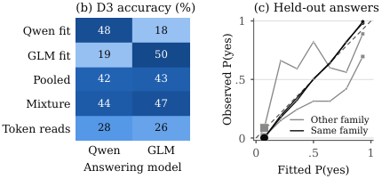

Theoretical results on lookahead, label scores and latent information gain are machine-checked in Lean 4.19 with Mathlib, with a table mapping theorems to Lean files.
Abstract
A proactive agent must decide what to ask before it acts. Exact lookahead values combinations of questions but is expensive and leans on a fitted model; a one-step score is cheap but can miss them. Our main finding: the need for depth often lies in how the hidden cause is described. A one-step score on the label can be blind to an interaction among answers. A score on a suitable latent cause is not, and where that latent encodes the decision it replaces most of depth at a fraction of the search. Described differently, the same problem can defeat the score while exact values do not move, so keep the latent small and check it against exact values. Probabilities learned from one language model's answers do not carry to another unless planning allows for both; those read from tokens are worth only a few labels.
Problem
A proactive agent must choose which questions to ask before acting. Exact multi-step lookahead captures combinations of answers but costs exponentially and relies on a fitted model. Cheap one-step label scores such as conditional mutual information can miss interactions among answers.
Approach
The authors propose latent information gain (LIG), a one-step score on a fitted latent cause, combined with an exact stopping rule (LIG-stop) and one step of rollout (Rollout-LIG). Theorems are machine-checked in Lean 4.19 with Mathlib in exact rational arithmetic. They show that label scores are blind to interactions hidden from shorter answer sets, that latent scores are not, and that rollout dominates LIG-stop under the fit. Simulations on context parity, CUBE-NM, a noisy grid and real data, including probabilities estimated from language-model answers, test the planners against exact depth search.
Results
Where the latent encodes the decision, Rollout-LIG nearly matches exact D3: it trails by .0031 on the noisy grid with about a twelfth of the search. It fails on context parity with a saturated latent, so how the latent is described matters as much as search depth. Probabilities learned from one language model do not transfer to another unless planning accounts for both.

Figure 7: Counted probabilities, tested on held-out answers. (a) A Beta–Bernoulli fit, with illustrative answers. (b) D3 identification on Common at seven questions (last row: Section 7.7 ’s four-model reads, no answers counted). (c) Reliability of the fitted yes-probability; dashed: perfect. Marker area follows the answers in a bin: 90–97% lie in the two extreme bins, where six answers agreed.